Docs › Examples › Downloadable notebooks › Example library
Example library
A growing set of verified example notebooks. Each one builds a standard physics case with OneSimulation, solves it and grades the result against a closed-form or independent reference. Download any one as a Jupyter notebook or a plain Python script, free and without sign-up.
 Heat conduction in a finite slabHeat transfer · 1D. A slab held at a fixed surface temperature cools by conduction; the transient profile is graded against the Fourier series.
Heat conduction in a finite slabHeat transfer · 1D. A slab held at a fixed surface temperature cools by conduction; the transient profile is graded against the Fourier series.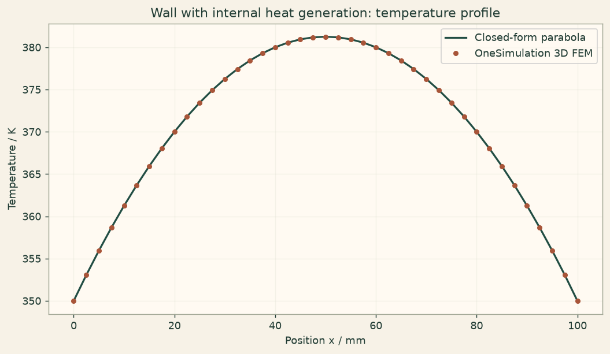
Heat conduction with volumetric heatingHeat transfer · 1D. A wall with uniform internal heating held at fixed surfaces; the parabolic temperature profile is graded against theory.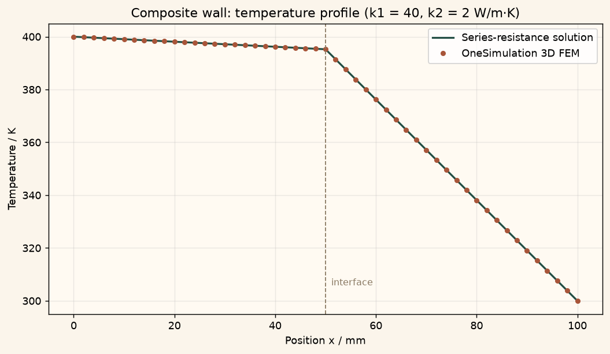
Conduction through a composite wallHeat transfer · 1D. Steady conduction through a two-layer wall; the interface temperature is graded against series-resistance theory.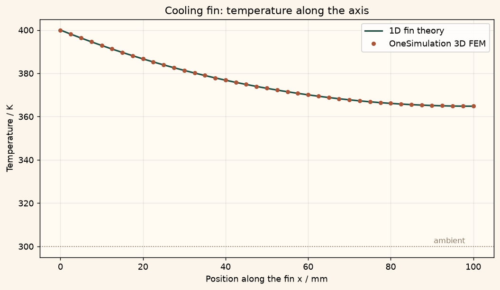
Convective cooling of a finHeat transfer · 1D. A cooling fin loses heat by convection along its sides; the temperature decay is graded against fin theory. Electric field between coaxial cylindersElectrostatics · 3D. A coaxial capacitor: the radial potential and field are graded against the exact logarithmic solution.
Electric field between coaxial cylindersElectrostatics · 3D. A coaxial capacitor: the radial potential and field are graded against the exact logarithmic solution.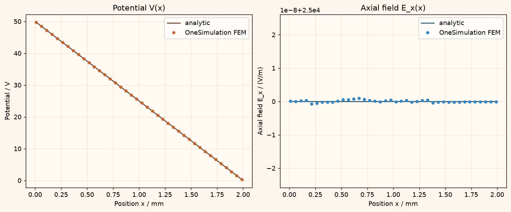
Parallel-plate capacitorElectrostatics · 3D. A parallel-plate capacitor: the uniform field and the capacitance are graded against the exact result.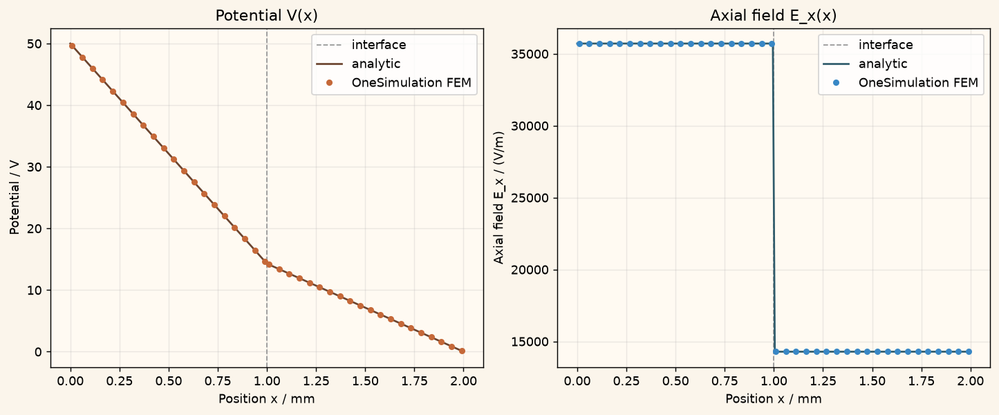
Capacitor with two dielectric layersElectrostatics · 3D. A capacitor filled with two dielectric layers in series; the field jump and the capacitance are graded against theory. Bending of a clamped beamSolid mechanics · 3D. A clamped beam under an end load: the 3D deflection is graded against Euler-Bernoulli beam theory.
Bending of a clamped beamSolid mechanics · 3D. A clamped beam under an end load: the 3D deflection is graded against Euler-Bernoulli beam theory.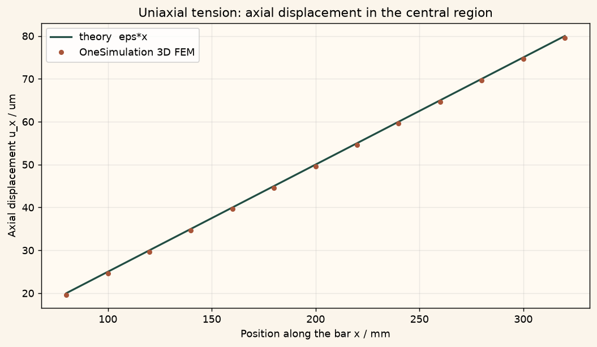
Uniaxial tension of a barSolid mechanics · 3D. A clamped bar under an end traction: stress, strain and lateral contraction are graded against the exact uniaxial result.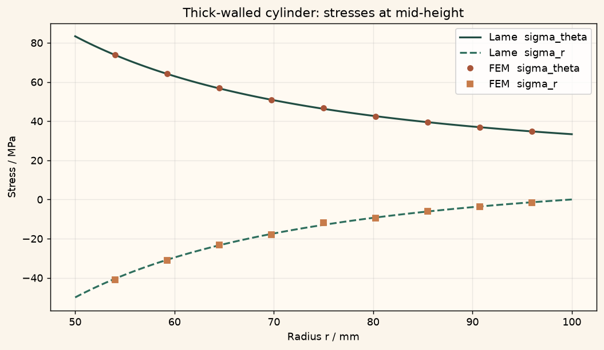
Thick-walled cylinder under internal pressureSolid mechanics · 3D. A pressurized thick-walled cylinder: the radial and hoop stresses are graded against the Lame solution. First-order reaction decayReaction kinetics · 0D. A first-order reaction A to B; the concentrations are graded against the exact exponential.
First-order reaction decayReaction kinetics · 0D. A first-order reaction A to B; the concentrations are graded against the exact exponential. Reversible reaction equilibriumReaction kinetics · 0D. A reversible reaction A to/from B relaxing to equilibrium; transient and equilibrium are graded against theory.
Reversible reaction equilibriumReaction kinetics · 0D. A reversible reaction A to/from B relaxing to equilibrium; transient and equilibrium are graded against theory. Consecutive reactions A to B to CReaction kinetics · 0D. A reaction chain A to B to C; the intermediate peak is graded against the series solution.
Consecutive reactions A to B to CReaction kinetics · 0D. A reaction chain A to B to C; the intermediate peak is graded against the series solution.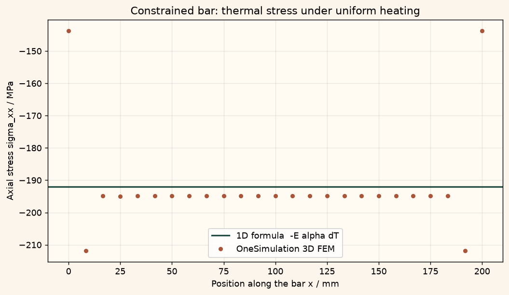
Thermal stress in a constrained barThermal stress · 3D. A clamped bar is heated uniformly; the thermal stress is graded against -E alpha dT.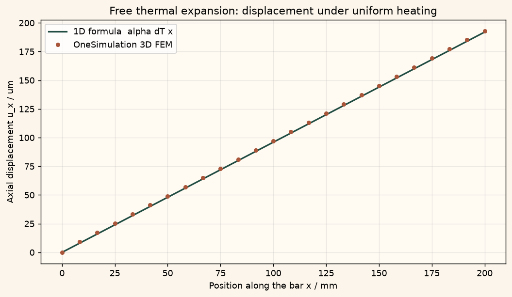
Free thermal expansionThermal stress · 3D. An unconstrained bar is heated uniformly; the elongation is graded against alpha dT L with zero stress. Poiseuille channel flowFluid flow · 3D. Pressure-driven laminar flow between two plates; the parabolic velocity profile is graded against theory.
Poiseuille channel flowFluid flow · 3D. Pressure-driven laminar flow between two plates; the parabolic velocity profile is graded against theory. Couette flowFluid flow · 3D. Flow driven by a moving wall; the linear velocity profile is graded against theory.
Couette flowFluid flow · 3D. Flow driven by a moving wall; the linear velocity profile is graded against theory. Shallow-water wave speedShallow water · 2D. A small surface perturbation on a still lake; the wave speed is graded against the square root of g h.
Shallow-water wave speedShallow water · 2D. A small surface perturbation on a still lake; the wave speed is graded against the square root of g h. Advection-diffusion in a channelHeat transfer · 1D. Steady transport of heat by a flow plus conduction; the Peclet profile is graded against theory.
Advection-diffusion in a channelHeat transfer · 1D. Steady transport of heat by a flow plus conduction; the Peclet profile is graded against theory. Newton cooling of a thermal massHeat transfer · 0D. A single thermal mass cooling by convection; the decay is graded against Newton's law of cooling.
Newton cooling of a thermal massHeat transfer · 0D. A single thermal mass cooling by convection; the decay is graded against Newton's law of cooling. Natural frequency of a cantileverSolid mechanics · 3D. The fundamental bending frequency of a clamped beam, graded against Euler-Bernoulli theory.
Natural frequency of a cantileverSolid mechanics · 3D. The fundamental bending frequency of a clamped beam, graded against Euler-Bernoulli theory. Interior field of a long solenoidMagnetostatics · 3D. The uniform interior field of a long solenoid, graded against mu0 n I.
Interior field of a long solenoidMagnetostatics · 3D. The uniform interior field of a long solenoid, graded against mu0 n I. On-axis field of a solenoidMagnetostatics · 3D. The on-axis field profile of a finite solenoid, graded against the finite-solenoid formula.
On-axis field of a solenoidMagnetostatics · 3D. The on-axis field profile of a finite solenoid, graded against the finite-solenoid formula.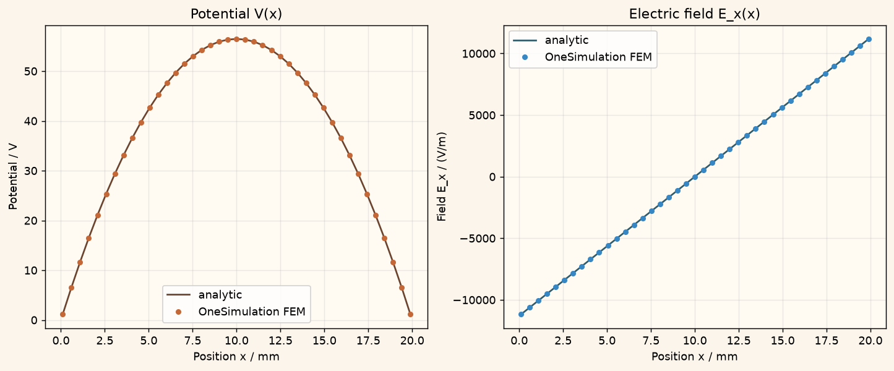
Poisson equation with space chargeElectrostatics · 1D. A slab with uniform space charge between grounded plates; the parabolic potential is graded against theory.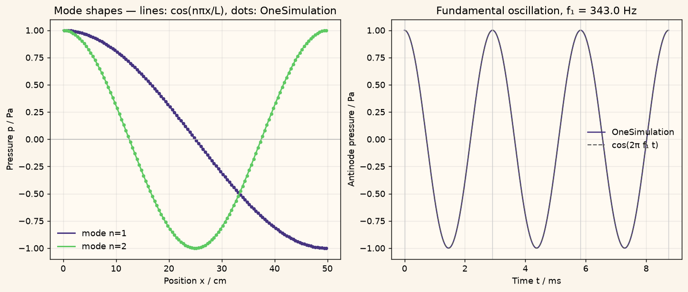
Resonance of an acoustic tubeAcoustics · 1D. The standing modes of a rigid tube; frequencies and mode shapes are graded against theory.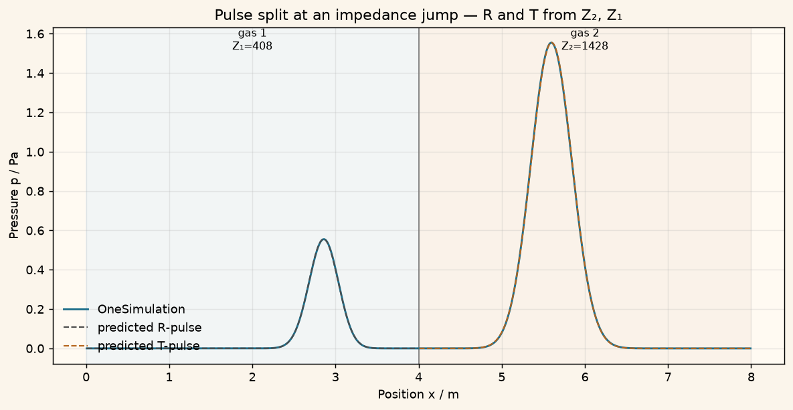
Plane-wave reflection at an interfaceAcoustics · 1D. A pressure pulse hitting a change of medium; reflection and transmission are graded against impedance theory.What you need to run it. An installed, activated OneSimulation runtime (Python 3.13). As a student or course instructor, you have free access. Everyone else can start with the 7-day free trial. The notebook itself carries no key. These are numerical verifications against references, not experimental validation.